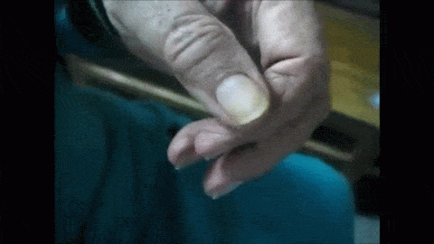

La santé, pour mieux comprendre et mieux prévenir
Comprendre les maladies actuelles, leurs causes et leurs mécanismes est essentiel pour les prévenir efficacement. Ce site met à disposition des informations claires et accessibles, fondées sur des repères fiables, afin de mieux comprendre le fonctionnement du corps et les enjeux de la santé actuelle. Il propose également des conseils concrets pour adopter une hygiène de vie plus saine, faire des choix éclairés et agir durablement sur sa santé au quotidien.
Hygiène de vie à adopter
Hygiène essentielle
- Supprimer le tabac et l’alcool.
- Réduire fortement les excès de sucre.
- Limiter les produits ultra-transformés.
- Privilégier une alimentation simple et naturelle.
Activité physique
- Pratiquer une activité régulière adaptée.
- Marcher chaque jour.
Sommeil et stress
- Respecter un sommeil régulier.
- Gérer le stress calmement.
Conseils de prévention et description de pathologies
Bilan de santé annuel
À faire annuellement.
Sport et santé
Prévenir par l’activité physique.
Maladies auto-immunes
Quand le ayatème immunitaire est déréglé et se trompe d'ennemi
Antidepresseurs
Effets indésirables possibles, risque de sevrage, interactions, et alternatives d’accompagnement.
Maladies de la thyroïde
Hypothyroïdie, hyperthyroïdie, nodules.

Maladie de Parkinson
Symptômes, diagnostic, prise en charge.
Cholestérol
LDL, HDL, triglycérides : risques et prévention.
Prédiabète
Seuils, risques, prévention.
Diabète
Glycémie élevée, résistance à l’insuline, complications possibles.
Résistance à l’insuline
Causes, signes, solutions.
Reflux (RGO)
Brûlures, reflux, mesures simples.
Constipation chronique
Fibres, hydratation, habitudes.
Intolérance au lactose
Symptômes, alternatives, tests.
Carence en fer
Fatigue, bilan, alimentation.
Vitamine D
Déficit, repères, prévention.
Magnésium
Stress, crampes, apports.
Calculs rénaux
Hydratation, sel, oxalates.
Hyperuricémie
Acide urique et goutte.
Sciatique
Douleur du bas du dos qui descend dans la jambe : causes fréquentes, symptômes, diagnostic, soulagement et prévention.
Inflammation de bas grade
Alimentation, poids, sommeil.
Lire les étiquettes
Sucre, sel, additifs, repères.
Anxiété
Stress, inquiétude, symptômes physiques et mentaux.
Obésité
Excès de masse grasse, risques cardio-métaboliques.
Syndrome métabolique
Tour de taille, tension, sucre et lipides déséquilibrés.
Stéatose hépatique non alcoolique
Accumulation de graisses dans le foie hors alcool.
Hypertension artérielle
Tension élevée durable, risque cardiovasculaire accru.
Palpitations du cœur
Battements rapides, forts ou irréguliers.
Infarctus du myocarde
Urgence : obstruction d’une artère coronaire.
Accident vasculaire cérébral
Urgence : atteinte de la circulation cérébrale.
Dépression
Humeur basse, fatigue, perte d’intérêt, troubles du sommeil.
Troubles anxieux
Anxiété excessive : panique, phobies, anxiété généralisée.
Burn-out
Épuisement lié au stress chronique, baisse d’énergie.
Maladie d’Alzheimer
Troubles cognitifs progressifs, notamment de la mémoire.
Démence
Autres causes de déclin cognitif (vasculaire, etc.).
Troubles du sommeil
Insomnie, apnée, sommeil non réparateur.
Addictions
Dépendances avec impact sur la santé et la vie sociale.
Troubles musculo-squelettiques
Douleurs et limitations : dos, tendons, articulations.
Arthrose
Comprendre l’arthrose, ses causes, ses symptômes et les solutions naturelles pour soulager les douleurs articulaires et préserver la mobilité.
Asthme
Inflammation des voies aériennes, crises, essoufflement.
Allergies
Réaction excessive à des allergènes (respiratoire, peau, etc.).
Phlébite
Thrombose veineuse profonde : signes, urgence, prévention.
Grippe hivernale
Symptômes, prévention, quand consulter.
Cancers | Pathologie
Un diagnostic précoce améliore souvent les chances de traitement.
Pollution et cancers

Maladies respiratoires
Épilepsie
Crises neurologiques : causes, diagnostic, prise en charge.
Syndrome de l’intestin irritable
Troubles digestifs fonctionnels : douleurs abdominales, ballonnements, transit perturbé.
Prévention et bien-être
Des conseils simples pour réduire les risques et améliorer la qualité de vie.